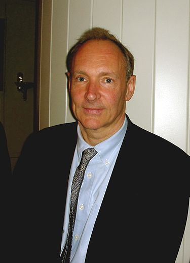

Тім Бернерс-Лі народився в Лондоні (Англія). Його батьки, Конвей Бернерс-Лі та Мері Лі Вудс були математиками і працювали над створенням «Manchester Mark 1», одного з перших комп'ютерів. Тім навчався (1969—1973) в престижній школі Емануель в передмісті Лондона Вандзверті, потім у Королівському коледжі в Оксфорді. Там він склав свій перший комп'ютер на базі мікропроцесора M6800 з телевізором замість монітора. Одного разу Тім і його друг були спіймані при проведенні хакерських дій, за що вони були позбавлені права користуватися університетськими комп'ютерами. Після закінчення з відзнакою Оксфордського університету в 1976 році за спеціальністю «фізика» Бернерс-Лі поступив на роботу в компанію «Plessey Telecommunications Ltd» у графстві Дорсет, де пропрацював два роки, займаючись головно системами розподілених транзакцій, засобами розсилання повідомлень та технологіями штрих-кодування. У 1978 році Бернерс-Лі перейшов до компанії «DG Nash Ltd», де займався програмами-драйверами для принтерів і створив модель багатозадачної операційної системи.
У 1994 році Бернерс-Лі перейшов працювати на кафедру «3Com» в Лабораторії інформатики Массачусетського технологічного інституту. Він і зараз є там провідним дослідником і обіймає посаду «засновника». Після злиття Лабораторії інформатики з Лабораторією штучного інтелекту в МТІ утворилася Лабораторія інформатики і штучного інтелекту (CSAIL). У 1994 році він заснував Консорціум Всесвітньої павутини при Лабораторії інформатики МТІ. Відтоді і до сьогодні Тім Бернерс-Лі очолює цей консорціум. Консорціум займається розробкою і впровадженням стандартів для Інтернету. Консорціум ставить перед собою завдання повністю розкрити потенціал Всесвітньої павутини, поєднуючи стабільність стандартів з їхнью швидкою еволюцією.У грудні 2004 року Тім Бернерс-Лі став професором Саутгемптонського університету. За вагомої підтримки університету він сподівається здійснити проєкт семантичної павутини. У червні 2009 року прем'єр-міністр Великої Британії Ґордон Браун призначив Бернерса-Лі радником при кабінеті міністрів. На цій посаді він протягом шести місяців займався питаннями поширення відкритої урядової інформації. За підсумками цієї роботи на початку 2010 року у Великій Британії розпочав роботу портал «data.gov.uk», на якому у відкритому доступі перебувають найрізноманітніші дані: від зведень погоди, які складаються державною метеорологічною службою Метеобюро, до статистики подій, інформації про транспортні потоки й бюджетні витрати.Він взяв участь у церемонії відкриття Лондонської олімпіади, де сидів за своєю старою робочою станцією «NexSTcube» і передав з неї твіт «Це для кожного».
Бернерс-Лі був одружений двічі. Його першу дружину звали Джейн, вони познайомилися під час навчання в Оксфордському університеті, одружилися відразу після його закінчення і спочатку працювали разом в компанії «Plessey Telecommunications Ltd». Зі своєю другою дружиною, програмістом Ненсі Карлсон, Бернерс-Лі познайомився під час роботи в CERN, вони одружилися у 1990 році і разом виховують двох дітей: дочку Еліс і сина Бена. У дитинстві Бернерс-Лі був хрещений в англіканській церкві, але згодом відмовився від цієї релігії. Вже після винаходу World Wide Web він став прихожанином Унітаріансько-універсалістської церкви. Бернерс-Лі любить відпочивати на природі, грає на піаніно та гітарі. Зараз сер Тім мешкає в передмісті Бостона з дружиною і дітьми, часто буває в роз'їздах по всьому світу.
| Основні публікації | Винаходи |
|---|---|
| «Weaving the Web: Origins and Future of the World Wide Web» - 1999 | World Wide Web |
| «Spinning the Semantic Web: Bringing the World Wide Web to Its Full Potential» - 2005 | першой у світі вебсервер «httpd» |